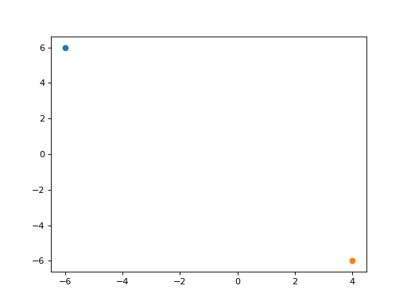

Matplotlib-高级绘图
高级绘图主要用于可视化数学计算／科学研究等领域
数学计算展示图像
绘制一个简单线性函数图像
import matplotlib.pyplot as plt
plt.rcParams['font.family'] = ['Arial Unicode MS', 'Microsoft Yahei', 'SimHei', 'sans-serif']
# 数据
x = [-15,-5,0,5,8,10]
a = 2
b = 5
# 线性函数 y=ax+b
y = []
for i in x:
y.append(a * i + b )
# 绘制
plt.plot(x,y)
plt.show()
给图像增加内容：
# 绘图
plt.plot(x,y)
###############
# 组件
# 标题，可以使用$引入部分latex文本排版语法和公式
plt.title('线性 $y=ax+b$，非线性 $y=ax^{2}+bx+c$')
# 坐标轴标注，当字符串里有反斜杠等转义特殊字符时,字符串前加`r`,表示显示原始字符串
plt.xlabel(r'X \axis')
###############
# 操作轴线
# gca，get corrent axis，获取轴
ax = plt.gca()
# 交换轴线
# ax.xaxis.set_ticks_position('top')
# ax.yaxis.set_ticks_position('right')
# 去除上侧和右侧的空白轴线
ax.spines['right'].set_color('none')
ax.spines['top'].set_color('none')
# 移位轴线
ax.spines['bottom'].set_position(['data', -10])
ax.spines['left'].set_position(['data', 0])
###############
# 添加注解标识
# 标记点
x0 = -2.5
y0 = a * x0 + b
plt.scatter(x0, y0, color='red') # 绘制点
# 标记线
plt.plot(
[x0, x0],
[y0, -10],
linestyle = '--',
color = 'k',
)
# 任意位置增加文本
plt.text(
5, # x轴
10, # y轴
'第一象限', # 显示文本内容
fontsize = 16, # 文字大小
rotation = 30, # 旋转角度
)
# 任意位置增加带箭头的注释文本
plt.annotate(
r'$Linear\ function\ y=ax+b$', #显示字符串，空格在$内不显示，用反斜杠转义
xy=(x0, y0), # 箭头位置
xytext=(-15, 10), # 文本位置
arrowprops=dict( # 字典类型，定义箭头样式
arrowstyle = 'fancy', # 箭头样式，例如 ->,<-,|-|,simple,fancy
color = 'green', # 箭头颜色
connectionstyle="arc3,rad=.2", # 箭头弧度
),
# 下面两个参数将绝对坐标位置设为相对坐标
# xycoords = 'data', # 相对默认坐标系偏移
# textcoords = 'offset points', # 相对坐标，相对箭头原点偏移
)
plt.show()
三维图像
三维图像主要用于三维数据可视化
import numpy as np
import matplotlib.pyplot as plt
from mpl_toolkits.mplot3d import Axes3D # 载入三维子库
plt.rcParams['font.family'] = ['Arial Unicode MS', 'Microsoft Yahei', 'SimHei', 'sans-serif']
# notebook输出图像
# %matplotlib notebook
# 创建父对象
fig = plt.figure()
# 创建子对象（三维）
ax = Axes3D(fig)
# 各轴生成0-100的随机坐标数据20个
x = np.random.randint(0, 100, 20)
y = np.random.randint(0, 100, 20)
z = np.random.randint(0, 100, 20)
# 绘制散点图
# ax.scatter(x, y, z)
# 绘制折线图
ax.plot(x, y, z)
# 坐标轴名称
ax.set_xlabel('x轴')
ax.set_ylabel('y轴')
ax.set_zlabel('z轴')
plt.show()
动画
import random
import numpy as np
import matplotlib.pyplot as plt
from matplotlib.animation import FuncAnimation # 载入动画子库
# GUI输出，或notebook输出，否则动画图像默认不能在网页展示
%matplotlib qt5
###########################3
fig, ax = plt.subplots()
line = [] # 供折线图追加数据
# 动画每帧调用的函数
def update(i):
plt.title(i) # frame的值，随调用遍历
# 绘制散点图
# s1 = random.randint(-10, 10) # x轴坐标数据
# s2 = random.randint(-10, 10) # y轴坐标数据
# ax.scatter(s1, s2) # 绘图
# 绘制折线图
s = random.randint(-1, 1) # 生成-1到1的随机数一个
line.append(s) # 随机数追加至变量line
# ax.plot(line)
ax.plot( # 绘图
np.array(line).cumsum(), # y轴坐标，line转为数组并累加
color='red'
)
# 动画方法
ani = FuncAnimation(
fig, # 动画应用的图像
update, # 动画每帧都要调用的函数
interval = 100, # 动画帧间隔，毫秒
frames = 50, # 动画帧数，对GIF有效，值调用函数内的i可以获取。可自定义值如range(50,100)
)
# 动画保存
ani.save('line.html', dpi=72)
# 动画如需保存为GIF图片，系统内必须安装imagemagick，（Ubuntu默认可用），测试Windows不可用
# ani.save('line.gif', dpi=72, writer='imagemagick')
plt.show()
